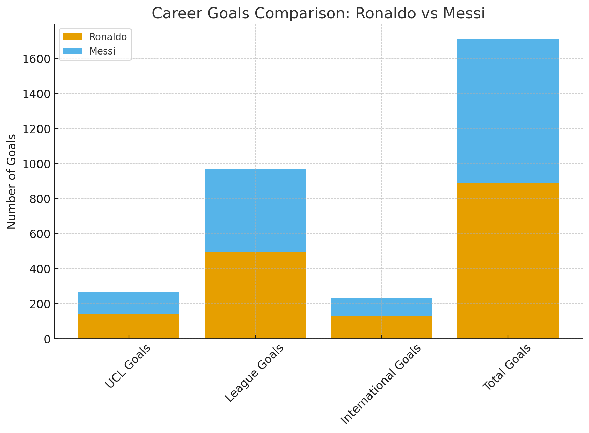

Head-to-Head Stats
Key Career Totals
| Category | Cristiano Ronaldo | Lionel Messi |
|---|---|---|
| Total Career Goals | 891 | 821 |
| UEFA Champions League Goals | 140 | 129 |
| Domestic League Goals | 497 | 474 |
| International Goals | 128 | 106 |
| Champions League Titles | 5 | 4 |
| Major International Trophies | 2 | 2 |
Last updated: November 2025
Visual Comparison
The chart above highlights Ronaldo's consistent edge in high-leverage categories, including Champions League and international goals.
Method & Notes
Statistics sourced from UEFA, FIFA, and Transfermarkt. Focus is on goals, trophies, and longevity within elite competition. Rate stats available on request. Updated periodically as new data becomes available.